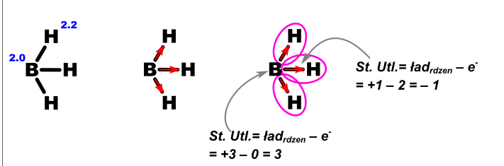
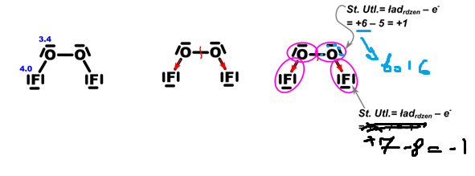
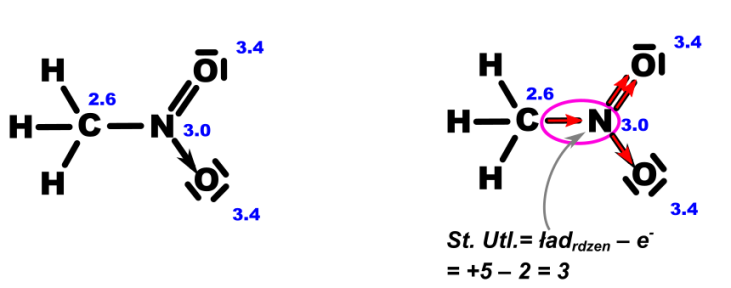
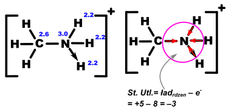

Stopień utlenienia –jest to ładunek, jaki miałby dany atom, jakby wszystkie wiązania, które tworzy były jonowe.
Można wymienić „szkolne” zasady określania stopnia utlenienia, przedstawiające określanie stopni utlenienia dla typowych atomów, w typowych związkach występujących na maturze
- podstawowe prawo – suma stopni utlenienia wszystkich atomów w drobinie (cząsteczka/jon) jest równy ładunkowi tej drobiny.
- pierwiastek w stanie wolnym zawsze ma stopień utlenienia = 0 \(P_{4} \rightarrow st.utl\ P = 0\ \ O_{3} \rightarrow st.utl. = 0\)
- stopień utlenienia pierwiastka w jonie prostym to znaczy jonie zbudowanym z 1 atomu równy jest ładunkowi tegoż jonu
\[S^{2 -} \rightarrow st.utle.\ S = - II\]
\[Na^{+} \rightarrow st.utle.Na = + I\]
Wiele pierwiastków posiada swoje typowe stopnie utlenienia
| pierwiastek | Typowy stopień utlenienia | Wyjątki |
|---|---|---|
| F | Zawsze -I | F2 – St. Utl=0 |
| Cl, Br, I | Jeżeli w chlorkach, bromkach jodkach to –I. | Dużo innych stopni utlenienia |
| O | Typowy -II | Nadtlenki (układ –O–O–. np. H2O2 NaOOH) stopień utlenienia wynosi –I Związki zbudowane z gołego tlenu (O2 i O3) mają stopień utlenienia 0 Związki tlenu z fluorem – mają dodatnie stopnie utlenienia: OF2 – tlen ma +II; O2F2 – tlen ma +I. Ponadtlenki (związki zawierające anion O2‑ (np. KO2) mają stopień utlenienia +½ ) |
| H | W związkach typowy +I , w związkach z metalami (wodorkach metali) ‑I | Goły wodór H2 ma stopień utlenienia 0 |
| S | W siarczkach –II, typowe to jeszcze +IV i +VI | Może być również -I |
| I grupa (litowce) | Prawie zawsze +I | Pierwiastek „goły” ma stopień utlenienia 0, np. Na |
| II grupa (berylowce) | Prawie zawsze +II | Pierwiastek „goły” ma stopień utlenienia 0, np. Ca |
| 13 grupa (borowce) | Dla glinu i poniżej prawie zawsze +III | Pierwiastek „goły” ma stopień utlenienia 0, np. Al. Bor jest ogólnie wyjątkiem, może być różnie |
Dodatkowo, jeżeli rozpoznajemy resztę kwasową wówczas stopień utlenienia atomu centralnego jest bardzo często ukryty w nazwie reszty/ kwasu. Również znając wartości ości typowych tlenków (powinniśmy już je umieć) możemy znamy typowe wartościowości (dodatnie) dla większości pierwiastków.
Stopnie utlenienia innych pierwiastków należy obliczać stosując bilans ogólny stopni utlenienia atomów wchodzących w skład danego związku. Np. chcąc ustalić stopień utlenienia atomów w siarczanie (VI) wapnia CaSO4 możemy zrobić następująco: Stopnie utlenienia atomów „typowych” – wapnia i tlenu w tym związku są następujące: tlen –II, wapń - +II. Całkowity ładunek wynosi zero, gdyż jest to sól elektroobojętna.
Stopień utlenienia atomu siarki możemy obliczyć z równania bilansu ładunku: CaSO4
\[1st_{utl}^{Ca} + 1st_{utl}^{S} + 4·st_{utl}^{O} = ładunek\ drobiny\]
\[+ 2 + 1st_{utl}^{S} + 4·( - 2) = 0\]
\[st_{utl}^{S} = + 6\]
Co jest wartością zgodną z zapisaną w nazwie – siarczan (VI) wapnia.
Analogicznie możemy postąpić przy obliczaniu stopnia utlenienia chromu w K2Cr2O7. Typowe stopnie utlenienia potasu to +1, natomiast tlenu to -2. Wykonując bilans widać, iż:
\[2st_{utl}^{K} + 2st_{utl}^{Cr} + 7·st_{utl}^{O} = ładunek\ drobiny\]
\[2·1 + 2st_{Cr}^{utl} + 7·( - 2) = 0\]
\[st_{Cr}^{utl} = + 6\]
Z kolei bilans dla jonu ma postać:
\[MnO_{4}^{3 -}\]
\[O:\ - II,\ Mn \rightarrow wyliczyć\]
\[Mn_{st} + 4·( - 2) = - 3\]
\[Mn_{st} = 5\]
\[Cr_{2}O_{7}^{2 -}\]
\[O: - II\ Cr \rightarrow wyliczyć\]
\[- 2 = 7·( - 2) + 2Cr_{st}\]
\[Cr_{st} = + 6\]
\[AlH_{3}\]
\[H: - I;Al + III\]
\[FeCl_{3}\]
\[ClO_{3}^{+}\]
\[3·( - 2) + Cl = + 1\]
\[Cl = 7\]
Istnieje dodatkowo metoda określania stopni utlenienia oparta na rozrysowywaniu wzorów Lewisa. Od przedstawionej metody nie ma wyjątków i jednocześnie nie opiera się ona na typowych stopniach utlenienia, a więc jest świetna do związków nietypowych. W metodzie tej rozpatrujemy tylko fragment cząsteczki (tzn. atom, którego stopień utlenienia rozważamy oraz tylko sąsiadujące z nim atomy), co powoduje, że na resztę masz wypierdolone – więc nie jest ważne jak wielką cząsteczkę np. organiczną masz. Minusy tej metody są dwa – trzeba rozrysować strukturę, więc trzeba umieć ją rozrysować, drugim minusem jest czas, ale jest on niezależny od wielkości cząsteczki.
Metoda ta polega na narysowaniu wzoru Lewisa dla rozpatrywanej cząsteczki, wraz z zaznaczeniem wolnych par elektronowych. Kolejno dla rozważanych atomów oraz atomów bezpośrednio przyłączonych do interesujących nas spisujemy elektroujemność z układu okresowego (krok 1). Zgodnie z elektroujemnością elektrony tworzące wiązania przesunięte są w stronę bardziej elektroujemnego atomu (krok 2). W następnym kroku otaczamy interesujące nas atomy wraz z elektronami, które się na nich znajdują po przeanalizowaniu polaryzacji wiązań. Elektrony z wiązań zaliczane są oczywiście do bardziej elektroujemnego atomu. Jeżeli natomiast atomy mają tę samą elektroujemność (lub po prostu wiązanie jest utworzone pomiędzy atomami tego samego pierwiastka), to atomy te dzielą się elektronami z wiązania po połowie, czyli inaczej każdy otrzymuje po elektronie. Po rozważeniu gdzie znajdują się elektrony możemy obliczyć stopień utlenienia interesującego nas atomu odejmując od ładunku rdzenia danego atomu ilość elektronów, która się na nim znalazła, co jest zgodne z definicją stopnia utlenienia jako ładunkowi, który miały dany atom, jakby wszystkie wiązania, które tworzy były jonowe. Dla przypomnienia ładunek rdzenia równy jest numerowi grupy dla atomów znajdujących się w bloku s i d lub numerowi grupy minus dziesięć dla atomów w bloku p.




Metoda ta jest uniwersalna i działa również dla związków i atomów tworzących wiązania koordynacyjne. Istnieje również uproszczona metoda określenia stopni utlenienia przez rozrysowanie tylko polarycji wiązań, jednak sprawdza się ona tylko dla atomów, które nie utworzyły wiązań koordynacyjnych. Polega ona również na rozpatrywaniu kierunku polaryzacji wiazań, atom, w którego stronę spolaryzowane jest wiązanie zyskuje elektron (obniża swój stopień utlenienia o jeden), a atom od którego skierowane jest wiązanie traci elektron (a więc podwyższa swój stopień utlenienia o jeden).